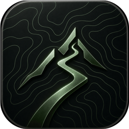
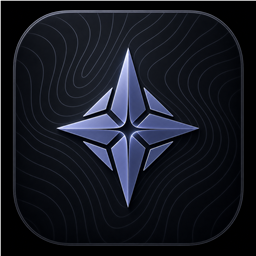

个人应用持续打磨中
Aevum.
给自己的生活，
做一个顺手的入口。
把训练、账本、日历和笔记放在一起，再通过 AI 对话把它们联系起来。它从我每天碰到的小问题里长出来。
看看这个项目PERSONAL TOOLSWEB / ANDROID
Aevum

Ultreia训练与赛事
Viatica账本与资产

Sidera日历与笔记
页面暂时未能完整载入，请重新加载。The page could not finish loading. Please reload.
我喜欢亲自去经历，也喜欢把一个模糊的念头，慢慢变成能看见、能使用的东西。
越野跑把我带到日常以外。AI 让我这样的非程序员，也能实践自己的想法。这个网站放着走过的路与做出的作品，偶尔回来看看。
再认识我一点几段真实经历，一些路上的细节。
赛记留存当时，记录不必有频率。
从公路到山野，也保留每一种出发。
给自己的生活，
做一个顺手的入口。
把训练、账本、日历和笔记放在一起，再通过 AI 对话把它们联系起来。它从我每天碰到的小问题里长出来。
看看这个项目

四个入口，放着日常里不同的事情。